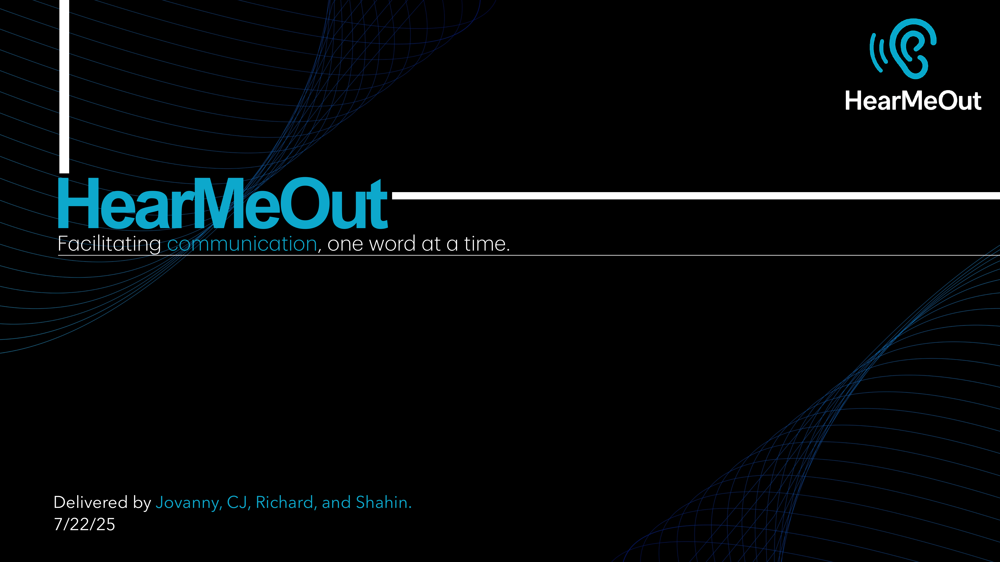
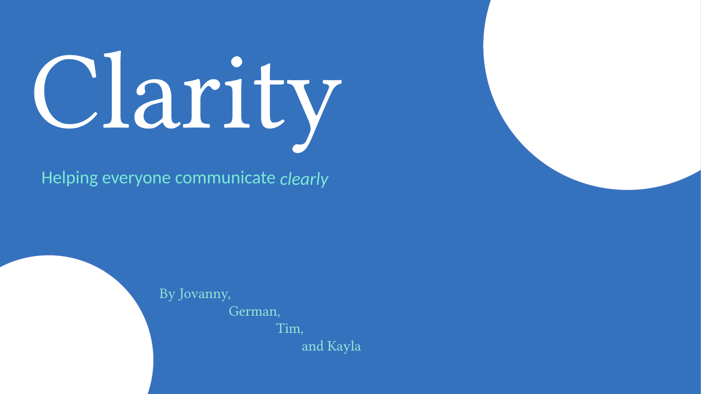

01
01
iOS concept · Communication
HearMeOut
I built HearMeOut as a communication tool for deaf and hard-of-hearing users. I wanted to make the conversation visible when sound isn’t enough.
I’m interested in the space where machine learning, accessibility, and everyday communication meet. Here are the two iOS concepts I’ve developed, plus an AI FAQ chatbot I built during my 2025–2026 internship at OnYourMark Education.
I’ve shaped two iOS concepts around everyday communication and built an AI FAQ assistant during my internship.
01
iOS concept · Communication
I built HearMeOut as a communication tool for deaf and hard-of-hearing users. I wanted to make the conversation visible when sound isn’t enough.
 02
02
iOS concept · Cognitive accessibility
I built Clarity as an all-in-one support concept for people who need help understanding text, revisiting a conversation, or expressing themselves clearly.
Internship · AI support
During my 2025–2026 internship at OnYourMark Education, I built an AI chatbot for the company’s private website. It answered FAQs and common questions directly; after I introduced it, the recurring influx of support tickets no longer happened.
Private internship projectI included every slide, plus the original demo video, in each deck. Use the arrows or choose a thumbnail to explore.
HearMeOut / full presentation

Embedded demo · slide 05
I’ve included the original video from the Keynote file here with native controls.
Clarity / full presentation

Embedded demo · slide 06
I’ve included the original PowerPoint video here with native controls.